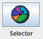
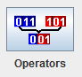
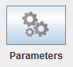

It allows the settings for the Selector, Genetic Operators and other Parameters.
To select and configure the selector to use, must press on the button shown in the image:
To select and configure the genetic operators to use, must press on the button shown in the image:
To configure the rest of parameters, must press on the button shown in the image:
